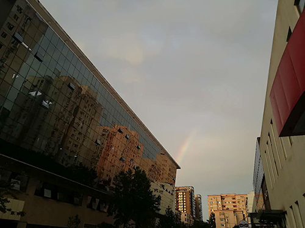
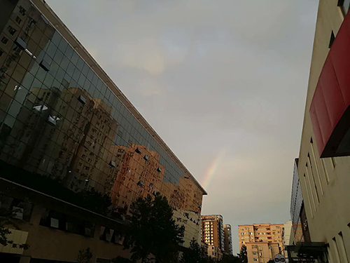

Sigrid 的记忆
Shawn 的记忆
2019年7月22日，我们相遇啦，相互打了声招呼，却没有进一步的交流。
2019年7月24日，看着你的照片，对你有一些好奇，看到你喜欢的歌手中有Eric Clapton，正好最近常听《old love》和《layla》觉得很喜欢，于是就此和你聊了起来，我们也从那时开始向对方分享各自喜欢的歌曲。
2019年7月24日，看着你的照片，对你有一些好奇，看到你喜欢的歌手中有Eric Clapton，正好最近常听《old love》和《layla》觉得很喜欢，于是就此和你聊了起来，我们也从那时开始向对方分享各自喜欢的歌曲。
2019年7月26日，你向我分享你看到流星的经历。7月29日，我向你分享当天傍晚的彩虹。因为这两个美好又转瞬即逝的景象，我们因此有了进一步的了解。

2019年8月3日，你的心情似乎不太好，你说自己被一种孤独感侵袭了，但作为一个刚认识不久的陌生人，我不知道怎么样能让你感觉好一些，于是向你分享了我心情低落时会做的事情。虽然不清楚是什么让你产生了这种情感，但类似的心情我却能够体会和感受得到。我想，你应该也是一个有那么一些敏感特质的人吧，并且寻求着倾诉与理解，从这一点上来说我们确实很相似。那天晚上我们聊了很久，一直聊到凌晨2点半，这也是我们第一次敞开心扉的交谈。
2019年8月17日，你向我推荐了克莱普顿的自传《天堂十字路口》，8月27日，你问我要不要把克莱普顿的自传带回来借给我看，我知道这意味着我们可能要见面了。

2019年8月3日，你的心情似乎不太好，你说自己被一种孤独感侵袭了，但作为一个刚认识不久的陌生人，我不知道怎么样能让你感觉好一些，于是向你分享了我心情低落时会做的事情。虽然不清楚是什么让你产生了这种情感，但类似的心情我却能够体会和感受得到。我想，你应该也是一个有那么一些敏感特质的人吧，并且寻求着倾诉与理解，从这一点上来说我们确实很相似。那天晚上我们聊了很久，一直聊到凌晨2点半，这也是我们第一次敞开心扉的交谈。
2019年8月17日，你向我推荐了克莱普顿的自传《天堂十字路口》，8月27日，你问我要不要把克莱普顿的自传带回来借给我看，我知道这意味着我们可能要见面了。
2019年9月6日，一阵闲聊后，你突然提出要把克莱普顿的自传带给我，这其实是从我们相识以来我一直期盼的时刻呀，和你见面，虽然来得有些突然，担心自己没有充足的时间准备，但我还是满怀期待地答应了。其实不只是想要见面，还想要有和你相处的时间，想知道这样一个会留心观察生活中细小却美妙的事物，愿意倾听也喜欢思考，有自己的体会和感悟，却偶尔也会有一些愁绪的男孩子，到底会是什么样子呢。不仅如此，当时你还说，假如见面后想离开就要告诉你。原来，你还是一个会主动考虑和照顾他人感受的人啊，这让我更想要见见你了。
2019年9月7日，我几乎半天都在期待又紧张的情绪中度过，一向不怎么擅长社交的我有些担心，担心现实中的我会比在网络上令人无趣得多。到了下午3点半，你到了门口，我赶忙从宿舍走了出去，拐到路口，看到你远远地站在树荫下，我忐忑地向你走过去，开始有点害羞了，不知道该怎么适当地向一个第一次见面却并不陌生的朋友打招呼。
见到你的第一个瞬间，并没有将你与我印象中你的样子联系起来。在我印象中照片上的你留着短发，戴着眼镜，下巴上有短短的胡茬，穿着一条围裙，看上去有点温柔儒雅，可能还有点贤惠。现实中你的头发半长不短，用发箍箍着，没有眼镜，胡子也刮得很干净，穿着T恤和短裤，相比照片上更粗糙随性一些，即便如此，却没有因陌生带来的不适感，我也不会担心认错人，好像我知道那就是你似的。你个子很高，我在你面前显得有点矮，要仰着头看你。
我们往电影院走，路上太阳很晒，我开始怀疑我的提议是不是太糟糕了。快走到时，磨破的后跟再次印证了我的想法。看着你关切的样子，我既开心又担心，担心因此给你留下不佳的印象。但看完电影后我们一起去吃了晚饭，后来你又带着我去听演出，我的顾虑慢慢被打消了。而随着时间变晚，我也变得越来越享受和你待在一起的感觉，我们坐在小小的桌子两旁对望，并肩走在夜晚有点微凉的街道，虽然已经接近十二点，我却一点都不想离开，我怎么会想离开呢？和你走在一起的感觉那么好，即使相互间没有说话，我也完全不会感到不安。
但最终你还是送我回到了学校，我们慢慢走到门口，你把书交给我，我想要加微信你却拒绝了，这让我很沮丧。分别时我们拥抱了一下，那个拥抱很短、很轻。进院门前我望了一眼你走向路口的背影，一度产生了一种恍惚的感觉，好像我们的见面只是一次不真实的经历，我们之前并不认识，之后可能也不会再见面，而这段经历只是这么悄悄地被放置在我生命中的这个时刻，让我有些不舍和珍惜。
2019年9月7日，我几乎半天都在期待又紧张的情绪中度过，一向不怎么擅长社交的我有些担心，担心现实中的我会比在网络上令人无趣得多。到了下午3点半，你到了门口，我赶忙从宿舍走了出去，拐到路口，看到你远远地站在树荫下，我忐忑地向你走过去，开始有点害羞了，不知道该怎么适当地向一个第一次见面却并不陌生的朋友打招呼。
见到你的第一个瞬间，并没有将你与我印象中你的样子联系起来。在我印象中照片上的你留着短发，戴着眼镜，下巴上有短短的胡茬，穿着一条围裙，看上去有点温柔儒雅，可能还有点贤惠。现实中你的头发半长不短，用发箍箍着，没有眼镜，胡子也刮得很干净，穿着T恤和短裤，相比照片上更粗糙随性一些，即便如此，却没有因陌生带来的不适感，我也不会担心认错人，好像我知道那就是你似的。你个子很高，我在你面前显得有点矮，要仰着头看你。
我们往电影院走，路上太阳很晒，我开始怀疑我的提议是不是太糟糕了。快走到时，磨破的后跟再次印证了我的想法。看着你关切的样子，我既开心又担心，担心因此给你留下不佳的印象。但看完电影后我们一起去吃了晚饭，后来你又带着我去听演出，我的顾虑慢慢被打消了。而随着时间变晚，我也变得越来越享受和你待在一起的感觉，我们坐在小小的桌子两旁对望，并肩走在夜晚有点微凉的街道，虽然已经接近十二点，我却一点都不想离开，我怎么会想离开呢？和你走在一起的感觉那么好，即使相互间没有说话，我也完全不会感到不安。
但最终你还是送我回到了学校，我们慢慢走到门口，你把书交给我，我想要加微信你却拒绝了，这让我很沮丧。分别时我们拥抱了一下，那个拥抱很短、很轻。进院门前我望了一眼你走向路口的背影，一度产生了一种恍惚的感觉，好像我们的见面只是一次不真实的经历，我们之前并不认识，之后可能也不会再见面，而这段经历只是这么悄悄地被放置在我生命中的这个时刻，让我有些不舍和珍惜。
第一次见面之后，我一直在回想那天的情景，我很确定还想要再见到你，但却不确定你是不是也同样。我们仍然保持着断断续续的联系，分享音乐和有趣的事情。我把你提到的克莱普顿的不插电专辑听了又听，翻看着你借给我的书，想着该怎么样才能再次和你见面呢。
2019年9月21日，你邀请我去世园会玩耍，这让我很高兴，因为我知道了你也是想要再见到我的。园区里人很多，我们像其他游客一样四处逛着。接近傍晚时，我们走到一条通往湖边的栈道，栈道上很安静，没有游客，我们就静静地走向湖边，趴在湖边的栏杆上，盯着面前的湖水、在湖里觅食的鸭子和远方雾蓝色的山，我们谁也没有说话，似乎都在想着什么。我心里有一股很想和你亲近的冲动，却不知道该怎么做，看着你若有所思的样子，于是我等待着，期待你先做出表示。在我们重新走回园区的时候，我几乎有点失望了，从早上到现在你都没有任何表示，我甚至开始怀疑，你是不是真的只是想找个伴陪着逛逛世园会而已。
后来，在一个斜坡上，我们站着看夕阳慢慢往下落，而就在晚霞浮现、天色慢慢变暗的时候，你终于牵起了我的手，你说怕人太多找不到我，但是啊，其实不需要任何理由，只要你向我伸出手我就会心甘情愿地接过去呀。我们牵着手夹在排队进场馆的人群里，不知道是太阳落下后还未凉下来的空气，还是拥挤人群带来的热气，又或者是我们内心的激动与欣喜导致的发热，我们紧贴着的手心不一会就热得出了汗，但我们谁也不愿意把手放开。牵着的双手让我们之间的距离一下拉近了，我们的话也变得多了起来。
回程时我们牵着手去坐火车，因为和你在一起，连排长队进站、飞奔进车厢都变得很有趣。但列车到站烦恼也来了，这意味着我们要分别了，但我还不想和你分开，看来，你也是这么想的。你陪着我坐地铁，在转2号线的电梯上，你突然弯下腰亲了我一下，我感到有点害羞，但又很甜蜜，这轻轻的一吻似乎给了我勇气。于是在你送我走回去的途中，我就知道了我想做什么，我们在门口站定，我产生一种感觉，好像我一天都在等着这一刻一样。我向上搂着你的脖子，你抱住我，我把头靠在你的肩上，然后我们慢慢地把头转向对方那一侧，脸颊触碰着擦过，直到我们的嘴唇碰到一起。我们亲吻了很久，像是要把那一整天压抑着的想要亲近的愿望都一股脑发泄出来似的。
2019年9月22日，前一天晚上当然没有睡好，脑子里全是我们牵手时滚烫的、汗湿的手心，还有临别前的亲吻。但所幸当天又能见到你，因此不至于思念得太过厉害。我们待在一起一整天，吃过晚饭后即使没有好的去处，也不想分开，即使和你一起在路上闲逛闲聊都会感觉很好。后来，我带你来到西海，我们走走停停，在荷花枯败的池塘边站立了许久，也亲吻了许久，这让我们更不想面对分别的时刻，也激发了我们想要和彼此更加亲近的欲望。你陪我慢慢走回寝室，我们的脚步很缓很缓，仿佛都在拖延着，思索着该如何更近一步。那天晚上我们终究没有回去，我们躺在一张床上拥抱、缠绵，两个人能在这么短的时间内变得如此亲密，让我既惊讶又喜悦。
2019年10月11日，经过近半个月的分离我们终于重新见面了，在这个假期里，我没有一天不在想着你，而同时，我也在想，我们两现在到底算是什么样的状态呢。我们约会、拥抱、亲吻、做爱，我们挂念着对方，每天都要给对方发消息，但我们却从没有向对方明确地表达自己的心意，虽然我在心里已经把你看作恋人，但你是不是也这样想呢？我决定等到下一次见面的时候，向你问清楚。其实我已在心里预设好了你的回答，我以为你的想法会同我一样，但事实却不是。你对开启一段新的恋爱关系有些顾虑，其实我又何尝不是呢，但因为遇到的是你，所以我不担心路上可能遇到的困难，我相信你会陪着我一同克服。虽然这次交流并不以我期望的方式开始，却以超出我预期的方式结束。重要的是，我们交换了各自的想法，向对方分享了内心的感受，我感到和你前所未有的亲近，我们现在是恋人了。
2019年11月2日，我第一次来到你住的这间小屋子，因为你前一天捡到了一只小猫，我想要和你一起照顾它。当天的天气阴沉沉，下着小雨，气温已经开始转凉，但小屋里却很温暖。我靠在你肩膀上，我们看着克莱普顿的不插电现场视频，不一会小猫跳上沙发，在我们的腿中间卧下睡着了，我们三个就这么靠着，让我觉得这世上仿佛没有比这更幸福的事了。
2020年1月12日，已经习惯了每周和你见面、约会的生活，我们一起吃下午茶看书、看电影吃小吃、带小猫检查打疫苗、堆雪人、冰上行走跨越河道，去植物园、颐和园和各种公园，因为是和你一起体验，让我觉得这些事情都变得更有趣了。后来，寒假到了，疫情也出现了，随即我们原本回北京的计划也受到了影响，我担心自己不能如期见到你，而周围的各种负面新闻消息和我的担忧叠加在一起，让我有点焦虑低落。
2020年2月10日，重新见到你之后，假期里产生的种种顾虑和烦恼都消失不见了。我们窝在这间小屋里，一起读书、做饭、看电影、亲热，好像外面的危险和苦难都与我无关，只要待在你身边，那些不安和焦虑纷纷都被抵挡在屋子外面。
2020年2月29日，这是个四年一度的日子，虽然有些后知后觉，但因为是和你一起度过的，总觉得意义非凡。我们最终也一起做了一件让这一天变得更有意义的事，我们分别向四年后的对方写了一封信。可是我有点不争气，写信的过程中一直忍不住眼泪，可能是想到难以预料的未来让我有些害怕吧，不知道四年后的我们会有什么样的变化，担心我们是不是还陪在彼此身边。
2020年4月25日，不知不觉我们已经相恋半年多啦，也共同生活了两个多月。而在一起生活的这段日子，是我以前从来没有过的也没有预料到会有的经历，两个人这么亲密无间地生活在一起。我原先料到这样的生活免不了会产生摩擦和矛盾，但却没想到我们之间产生的大部分矛盾都是由我引发的。而最让我烦恼的，就是我的坏情绪总是不可避免地会影响到你的心情。因为我不太会掩饰自己的情绪，也很难快速地调节自我，而两个人这么亲密的生活让我很难把它们隐藏起来。但是，你总会耐心地听我把想法讲出来，即使我的表达很不连贯，即使它们可能只是一些琐碎的小事，即使我总是说到一半就忍不住哭鼻子。
所以，我觉得我很幸运，幸运遇到了你。因为你，我体会到很多以前从没有过的情感，有了很多新的体验，和你沟通交流为我带来很多反思和思考，也让我想要让自己变得更好，从而能够和你一起走得更远。但是时间的流逝可能会让我们淡忘掉以前的记忆，我不希望这样，因为和你在一起的每一个瞬间都是值得记住的。因此，我做了这个小小的网页，不仅为你，也是为我，希望它能为我们两的记忆提供一个可回溯的渠道。
2019年9月21日，你邀请我去世园会玩耍，这让我很高兴，因为我知道了你也是想要再见到我的。园区里人很多，我们像其他游客一样四处逛着。接近傍晚时，我们走到一条通往湖边的栈道，栈道上很安静，没有游客，我们就静静地走向湖边，趴在湖边的栏杆上，盯着面前的湖水、在湖里觅食的鸭子和远方雾蓝色的山，我们谁也没有说话，似乎都在想着什么。我心里有一股很想和你亲近的冲动，却不知道该怎么做，看着你若有所思的样子，于是我等待着，期待你先做出表示。在我们重新走回园区的时候，我几乎有点失望了，从早上到现在你都没有任何表示，我甚至开始怀疑，你是不是真的只是想找个伴陪着逛逛世园会而已。
后来，在一个斜坡上，我们站着看夕阳慢慢往下落，而就在晚霞浮现、天色慢慢变暗的时候，你终于牵起了我的手，你说怕人太多找不到我，但是啊，其实不需要任何理由，只要你向我伸出手我就会心甘情愿地接过去呀。我们牵着手夹在排队进场馆的人群里，不知道是太阳落下后还未凉下来的空气，还是拥挤人群带来的热气，又或者是我们内心的激动与欣喜导致的发热，我们紧贴着的手心不一会就热得出了汗，但我们谁也不愿意把手放开。牵着的双手让我们之间的距离一下拉近了，我们的话也变得多了起来。
回程时我们牵着手去坐火车，因为和你在一起，连排长队进站、飞奔进车厢都变得很有趣。但列车到站烦恼也来了，这意味着我们要分别了，但我还不想和你分开，看来，你也是这么想的。你陪着我坐地铁，在转2号线的电梯上，你突然弯下腰亲了我一下，我感到有点害羞，但又很甜蜜，这轻轻的一吻似乎给了我勇气。于是在你送我走回去的途中，我就知道了我想做什么，我们在门口站定，我产生一种感觉，好像我一天都在等着这一刻一样。我向上搂着你的脖子，你抱住我，我把头靠在你的肩上，然后我们慢慢地把头转向对方那一侧，脸颊触碰着擦过，直到我们的嘴唇碰到一起。我们亲吻了很久，像是要把那一整天压抑着的想要亲近的愿望都一股脑发泄出来似的。
2019年9月22日，前一天晚上当然没有睡好，脑子里全是我们牵手时滚烫的、汗湿的手心，还有临别前的亲吻。但所幸当天又能见到你，因此不至于思念得太过厉害。我们待在一起一整天，吃过晚饭后即使没有好的去处，也不想分开，即使和你一起在路上闲逛闲聊都会感觉很好。后来，我带你来到西海，我们走走停停，在荷花枯败的池塘边站立了许久，也亲吻了许久，这让我们更不想面对分别的时刻，也激发了我们想要和彼此更加亲近的欲望。你陪我慢慢走回寝室，我们的脚步很缓很缓，仿佛都在拖延着，思索着该如何更近一步。那天晚上我们终究没有回去，我们躺在一张床上拥抱、缠绵，两个人能在这么短的时间内变得如此亲密，让我既惊讶又喜悦。
2019年10月11日，经过近半个月的分离我们终于重新见面了，在这个假期里，我没有一天不在想着你，而同时，我也在想，我们两现在到底算是什么样的状态呢。我们约会、拥抱、亲吻、做爱，我们挂念着对方，每天都要给对方发消息，但我们却从没有向对方明确地表达自己的心意，虽然我在心里已经把你看作恋人，但你是不是也这样想呢？我决定等到下一次见面的时候，向你问清楚。其实我已在心里预设好了你的回答，我以为你的想法会同我一样，但事实却不是。你对开启一段新的恋爱关系有些顾虑，其实我又何尝不是呢，但因为遇到的是你，所以我不担心路上可能遇到的困难，我相信你会陪着我一同克服。虽然这次交流并不以我期望的方式开始，却以超出我预期的方式结束。重要的是，我们交换了各自的想法，向对方分享了内心的感受，我感到和你前所未有的亲近，我们现在是恋人了。
2019年11月2日，我第一次来到你住的这间小屋子，因为你前一天捡到了一只小猫，我想要和你一起照顾它。当天的天气阴沉沉，下着小雨，气温已经开始转凉，但小屋里却很温暖。我靠在你肩膀上，我们看着克莱普顿的不插电现场视频，不一会小猫跳上沙发，在我们的腿中间卧下睡着了，我们三个就这么靠着，让我觉得这世上仿佛没有比这更幸福的事了。
2020年1月12日，已经习惯了每周和你见面、约会的生活，我们一起吃下午茶看书、看电影吃小吃、带小猫检查打疫苗、堆雪人、冰上行走跨越河道，去植物园、颐和园和各种公园，因为是和你一起体验，让我觉得这些事情都变得更有趣了。后来，寒假到了，疫情也出现了，随即我们原本回北京的计划也受到了影响，我担心自己不能如期见到你，而周围的各种负面新闻消息和我的担忧叠加在一起，让我有点焦虑低落。
2020年2月10日，重新见到你之后，假期里产生的种种顾虑和烦恼都消失不见了。我们窝在这间小屋里，一起读书、做饭、看电影、亲热，好像外面的危险和苦难都与我无关，只要待在你身边，那些不安和焦虑纷纷都被抵挡在屋子外面。
2020年2月29日，这是个四年一度的日子，虽然有些后知后觉，但因为是和你一起度过的，总觉得意义非凡。我们最终也一起做了一件让这一天变得更有意义的事，我们分别向四年后的对方写了一封信。可是我有点不争气，写信的过程中一直忍不住眼泪，可能是想到难以预料的未来让我有些害怕吧，不知道四年后的我们会有什么样的变化，担心我们是不是还陪在彼此身边。
2020年4月25日，不知不觉我们已经相恋半年多啦，也共同生活了两个多月。而在一起生活的这段日子，是我以前从来没有过的也没有预料到会有的经历，两个人这么亲密无间地生活在一起。我原先料到这样的生活免不了会产生摩擦和矛盾，但却没想到我们之间产生的大部分矛盾都是由我引发的。而最让我烦恼的，就是我的坏情绪总是不可避免地会影响到你的心情。因为我不太会掩饰自己的情绪，也很难快速地调节自我，而两个人这么亲密的生活让我很难把它们隐藏起来。但是，你总会耐心地听我把想法讲出来，即使我的表达很不连贯，即使它们可能只是一些琐碎的小事，即使我总是说到一半就忍不住哭鼻子。
所以，我觉得我很幸运，幸运遇到了你。因为你，我体会到很多以前从没有过的情感，有了很多新的体验，和你沟通交流为我带来很多反思和思考，也让我想要让自己变得更好，从而能够和你一起走得更远。但是时间的流逝可能会让我们淡忘掉以前的记忆，我不希望这样，因为和你在一起的每一个瞬间都是值得记住的。因此，我做了这个小小的网页，不仅为你，也是为我，希望它能为我们两的记忆提供一个可回溯的渠道。